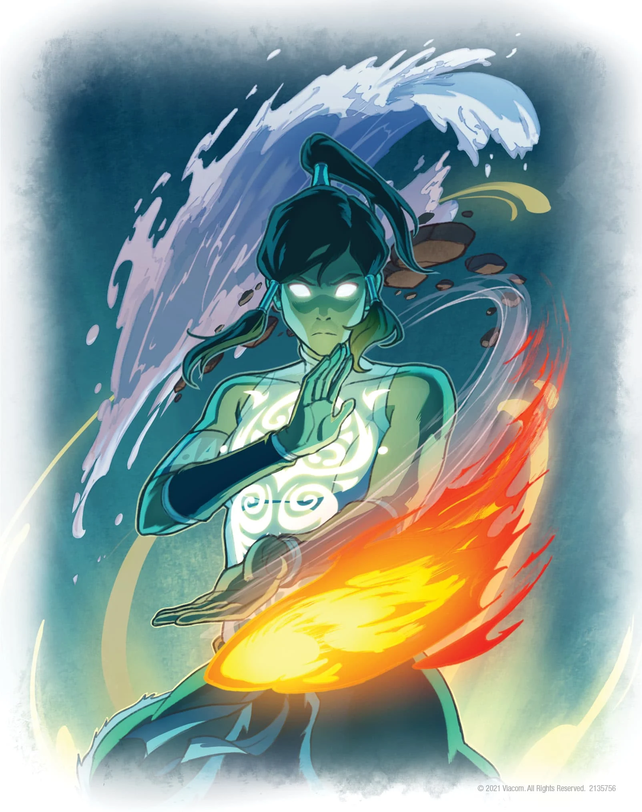

About Korra
Korra is a water bender from the Southern water tribe who is chosen to be the Avatar. Her main duty as the avatar is to restore peace and bring balance to the world. She is required to master all four elements, which is something only the avatar can do and although it doing so won't be easy, she can always count on her friends and air bending master for help when needed.
Korra in the avatar state
Korra's Abilities
Korra possesses the ability to use all mastered bendings at once which is possible mostly when she's in the Avatar State, a place only the avatar can access. Here are the mastered bendings;
- WaterBending
- EartBending
- FireBending
- AirBending
- MetalBending
Team Avatar
Korra's Friends
Team Avatar is made up of Korra's master and her friends;